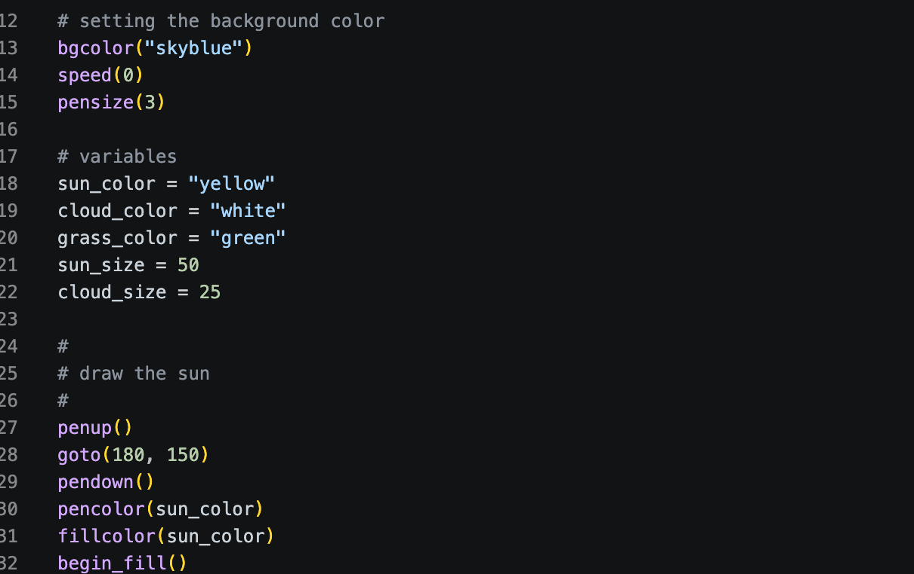
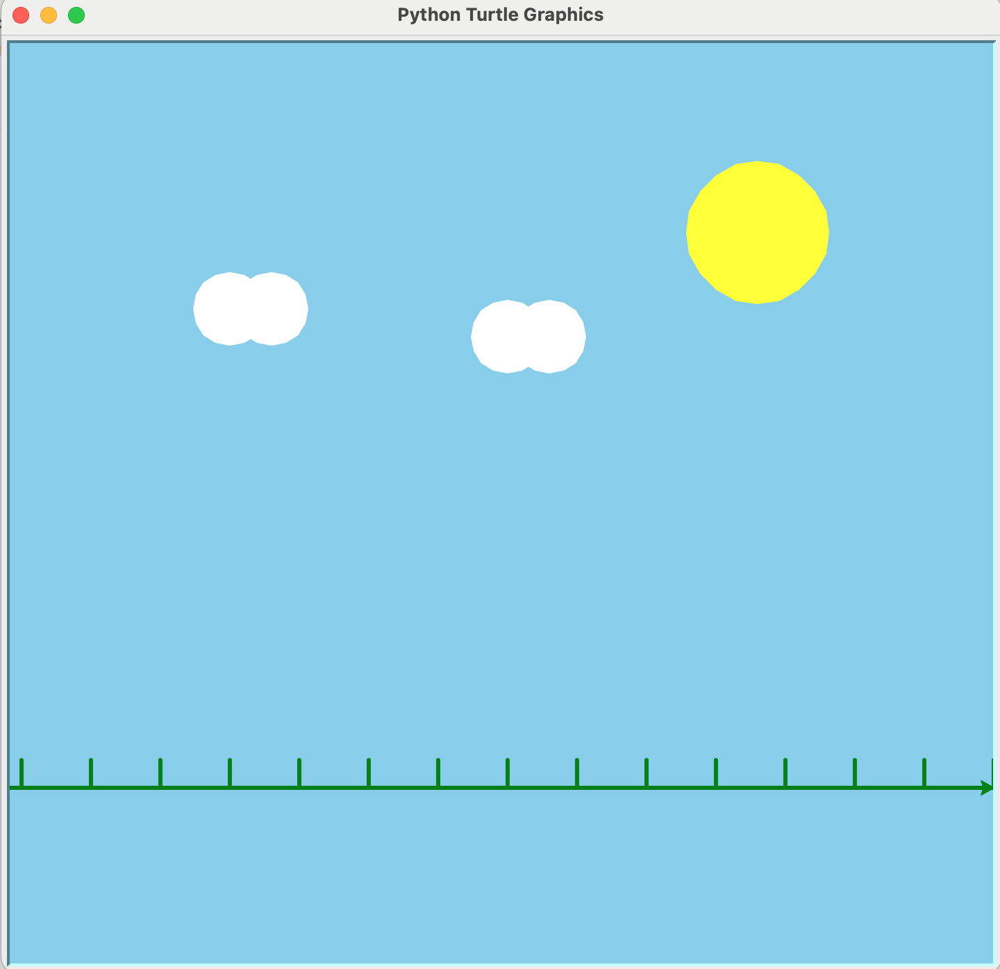

In Project 1, I learned the basics of Python Turtle graphics. I used commands such as forward, left, and right to move the turtle around the screen and create shapes. This project helped me understand how programming can be used to create visual designs and introduced me to the fundamentals of coding with Python.
This part of my code sets up the Turtle scene by choosing the background color, speed, pen size, and variables for the sun, clouds, and grass.


This scene uses a sky background, sun, clouds, and grass to create a simple outdoor landscape. I used different colors, variables, and Turtle commands to build the scene and place each object in the correct location. This project helped me practice combining multiple shapes into one complete drawing.